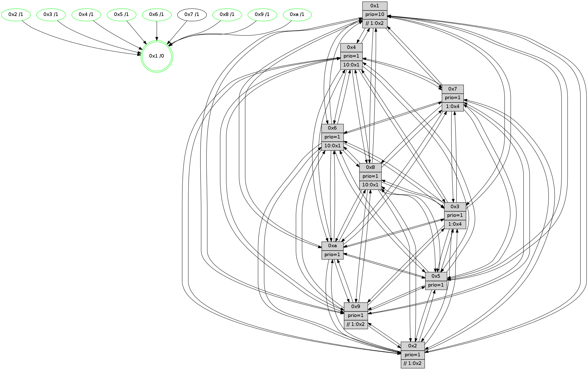

>> << IDX [start] -100 -25 -5 +0 +5 +25 +100 [840.576220989]
 Previous packets
----------------------------------------------------------------------
835.059309 beacon01(faad) #0 coord=01,02,03,04,05,06,07,0a,09,08 cycle=688.0ms assoc
-- color-indic=1 64 35 eb
835.069290 beacon02(faad) #0 coord=01,02,03,04,05,06,07,0a,09,08 cycle=688.0ms assoc 64 a6 da
835.079291 beacon03(faad) #0 coord=01,02,03,04,05,06,07,0a,09,08 cycle=688.0ms assoc 64 dc 97
835.089291 beacon04(faad) #0 coord=01,02,03,04,05,06,07,0a,09,08 cycle=688.0ms assoc 64 ab 7d
835.099291 beacon05(faad) #0 coord=01,02,03,04,05,06,07,0a,09,08 cycle=688.0ms assoc 64 d1 30
835.109292 beacon06(faad) #0 coord=01,02,03,04,05,06,07,0a,09,08 cycle=688.0ms assoc 64 5f e7
835.119291 beacon07(faad) #0 coord=01,02,03,04,05,06,07,0a,09,08 cycle=688.0ms assoc 64 25 aa
835.129297 beacon0a(faad) #0 coord=01,02,03,04,05,06,07,0a,09,08 cycle=688.0ms assoc 64 54 a1
835.149297 beacon08(faad) #0 coord=01,02,03,04,05,06,07,0a,09,08 cycle=688.0ms assoc 64 a0 3b
835.161104 [Hello(7): seq=534 sym=2,3,5,6,4,8,9,10,1 sysInfo=hasWarning stat=2:13,2,9,10/3:11,3,4,9/5:6,3,7,14/6:9,15,6,4/4:11,11,2,0/8:3,4,1,1/9:3,14,6,10/10:10,10,7,9/1:4,0,12,0]
835.164142 [Hello(8): seq=478 sym=5,2,3,4,7,6,9,10,1 sysInfo=hasWarning stat=5:7,8,4,10/2:3,2,13,2/3:4,8,1,9/4:11,8,15,6/7:10,11,4,9/6:6,9,13,8/9:8,14,2,0/10:6,5,2,0/1:11,12,10,0]
835.167596 [Color(8) seq=190 @0:0 prio=1]
835.174149 [Color(9) seq=183 @0:0 prio=1 >>1.@2,1.@3,1.@4]
835.179391 [Color(3) seq=175 @0:0 prio=1 >1.@4,1.@6,1.@7]
835.182274 [Hello(10): seq=467 sym=6,2,3,8,9,5,7,4,1 sysInfo=hasWarning stat=6:0,9,2,3/2:9,3,13,2/3:1,11,11,6/8:3,6,13,9/9:9,14,4,1/5:10,6,3,11/7:12,0,3,5/4:3,12,9,6/1:7,12,14,1]
835.186388 [Color(10) seq=155 @0:0 prio=1]
----------------------------------------------------------------------
835.847439 beacon01(faad) #0 coord=01,02,03,04,05,06,07,0a,09,08 cycle=688.0ms assoc
-- color-indic=1 64 f1 e5
835.857422 beacon02(faad) #0 coord=01,02,03,04,05,06,07,0a,09,08 cycle=688.0ms assoc 64 62 d4
835.867421 beacon03(faad) #0 coord=01,02,03,04,05,06,07,0a,09,08 cycle=688.0ms assoc 64 18 99
835.877422 beacon04(faad) #0 coord=01,02,03,04,05,06,07,0a,09,08 cycle=688.0ms assoc 64 6f 73
835.887421 beacon05(faad) #0 coord=01,02,03,04,05,06,07,0a,09,08 cycle=688.0ms assoc 64 15 3e
835.897421 beacon06(faad) #0 coord=01,02,03,04,05,06,07,0a,09,08 cycle=688.0ms assoc 64 9b e9
835.907422 beacon07(faad) #0 coord=01,02,03,04,05,06,07,0a,09,08 cycle=688.0ms assoc 64 e1 a4
835.917428 beacon0a(faad) #0 coord=01,02,03,04,05,06,07,0a,09,08 cycle=688.0ms assoc 64 90 af
835.937427 beacon08(faad) #0 coord=01,02,03,04,05,06,07,0a,09,08 cycle=688.0ms assoc 64 64 35
835.949602 [Hello(6): seq=535 sym=2,3,5,4,7,9,8,10,1 sysInfo= stat=2:3,6,11,7/3:0,0,3,7/5:14,2,4,11/4:0,5,14,0/7:7,10,15,3/9:0,4,4,1/8:15,13,2,8/10:0,6,8,8/1:13,13,9,1]
835.952657 [Hello(5): seq=535 sym=7,6,4,3,1,9,8,10,2 sysInfo=hasWarning stat=7:3,6,4,6/6:9,13,3,8/4:0,14,7,5/3:3,1,11,7/1:4,15,13,1/9:10,10,1,1/8:14,6,13,7/10:0,13,10,2/2:7,15,4,0]
835.956449 [Color(5) seq=188 @0:0 prio=1]
835.957697 [Hello(2): seq=531 sym=4,5,7,6,3,9,8,10,1 sysInfo=hasWarning stat=4:9,10,13,4/5:8,12,13,3/7:5,5,5,7/6:6,0,0,6/3:0,8,12,4/9:0,9,15,1/8:1,10,12,7/10:11,0,14,7/1:3,12,9,1]
835.961400 [Hello(3): seq=535 sym=1,7,6,2,4,8,9,10,5 sysInfo= stat=1:7,13,1,0/7:14,8,12,5/6:2,1,1,0/2:11,1,15,8/4:5,12,8,5/8:15,7,11,5/9:6,3,1,8/10:11,9,15,7/5:2,15,12,9]
835.964111 [Color(4) seq=153 @0:0 prio=1 >10.@1,1.@2,1.@3,1.@6]
835.968111 [Hello(1): seq=444 sym=4,2,9,5,10,3,8,6,7 sysInfo=coloring-mode-on,ColoringModeRequestCalled stat=4:15,0,4,0/2:11,4,13,9/9:10,10,0,2/5:10,1,6,3/10:8,15,11,9/3:6,2,11,0/8:1,13,12,9/6:5,6,11,8/7:3,4,1,11]
835.972433 [Color(2) seq=180 @0:0 prio=1 >>1.@2,1.@3,1.@4]
----------------------------------------------------------------------
836.635568 beacon01(faad) #0 coord=01,02,03,04,05,06,07,0a,09,08 cycle=688.0ms assoc
-- color-indic=1 64 4d e0
836.645551 beacon02(faad) #0 coord=01,02,03,04,05,06,07,0a,09,08 cycle=688.0ms assoc 64 de d1
836.655551 beacon03(faad) #0 coord=01,02,03,04,05,06,07,0a,09,08 cycle=688.0ms assoc 64 a4 9c
836.665551 beacon04(faad) #0 coord=01,02,03,04,05,06,07,0a,09,08 cycle=688.0ms assoc 64 d3 76
836.675551 beacon05(faad) #0 coord=01,02,03,04,05,06,07,0a,09,08 cycle=688.0ms assoc 64 a9 3b
836.685551 beacon06(faad) #0 coord=01,02,03,04,05,06,07,0a,09,08 cycle=688.0ms assoc 64 27 ec
836.695552 beacon07(faad) #0 coord=01,02,03,04,05,06,07,0a,09,08 cycle=688.0ms assoc 64 5d a1
836.705557 beacon0a(faad) #0 coord=01,02,03,04,05,06,07,0a,09,08 cycle=688.0ms assoc 64 2c aa
836.725556 beacon08(faad) #0 coord=01,02,03,04,05,06,07,0a,09,08 cycle=688.0ms assoc 64 d8 30
836.736740 [Hello(7): seq=535 sym=2,3,5,6,4,8,9,10,1 sysInfo=hasWarning stat=2:14,3,9,10/3:12,4,4,9/5:7,4,7,14/6:10,0,6,4/4:11,12,2,0/8:4,5,1,1/9:3,15,6,10/10:11,11,7,9/1:5,0,12,0]
836.739512 [Color(6) seq=178 @0:0 prio=1 >10.@1,1.@2,1.@3,1.@4]
836.741702 [Color(3) seq=176 @0:0 prio=1 >1.@4,1.@6,1.@7]
836.743318 [Hello(4): seq=535 sym=5,7,6,2,3,9,8,10,1 sysInfo= stat=5:7,9,1,9/7:0,11,2,4/6:7,2,0,8/2:7,10,13,8/3:5,11,13,5/9:10,3,3,4/8:8,13,1,10/10:2,11,5,7/1:11,1,13,1]
836.746450 [Hello(8): seq=479 sym=5,2,3,4,7,6,9,10,1 sysInfo=hasWarning stat=5:8,9,4,10/2:4,3,13,2/3:5,9,1,9/4:11,9,15,6/7:11,11,4,9/6:7,9,13,8/9:8,15,2,0/10:7,6,2,0/1:12,12,10,0]
836.749006 [STC(1) #0.97 tree-change,inconsistent-stability,stable,to-color d=0]
836.750358 [Color(8) seq=191 @0:0 prio=1]
836.754933 [Color(1) seq=216 @0:0 prio=10 >>1.@2,1.@3,1.@4]
836.756638 [Hello(10): seq=468 sym=6,2,3,8,9,5,7,4,1 sysInfo=hasWarning stat=6:1,9,2,3/2:10,4,13,2/3:2,11,11,6/8:3,6,13,9/9:9,14,4,1/5:11,7,3,11/7:13,0,3,5/4:3,13,9,6/1:8,12,14,1]
836.760752 [Color(10) seq=156 @0:0 prio=1]
836.765915 [Hello(9): seq=479 sym=2,5,3,4,7,6,8,10,1 sysInfo=hasWarning stat=2:4,13,13,0/5:3,9,13,2/3:2,3,12,9/4:11,10,13,6/7:8,1,6,7/6:4,5,2,6/8:11,0,7,1/10:6,6,3,0/1:3,7,14,1]
836.769996 [Color(9) seq=184 @0:0 prio=1 >>1.@2,1.@3,1.@4]
----------------------------------------------------------------------
837.423700 beacon01(faad) #0 coord=01,02,03,04,05,06,07,0a,09,08 cycle=688.0ms assoc
-- color-indic=1 64 99 d5
837.433682 beacon02(faad) #0 coord=01,02,03,04,05,06,07,0a,09,08 cycle=688.0ms assoc 64 0a e4
837.443683 beacon03(faad) #0 coord=01,02,03,04,05,06,07,0a,09,08 cycle=688.0ms assoc 64 70 a9
837.453684 beacon04(faad) #0 coord=01,02,03,04,05,06,07,0a,09,08 cycle=688.0ms assoc 64 07 43
837.463683 beacon05(faad) #0 coord=01,02,03,04,05,06,07,0a,09,08 cycle=688.0ms assoc 64 7d 0e
837.473684 beacon06(faad) #0 coord=01,02,03,04,05,06,07,0a,09,08 cycle=688.0ms assoc 64 f3 d9
837.483683 beacon07(faad) #0 coord=01,02,03,04,05,06,07,0a,09,08 cycle=688.0ms assoc 64 89 94
837.493688 beacon0a(faad) #0 coord=01,02,03,04,05,06,07,0a,09,08 cycle=688.0ms assoc 64 f8 9f
837.513690 beacon08(faad) #0 coord=01,02,03,04,05,06,07,0a,09,08 cycle=688.0ms assoc 64 0c 05
837.526424 [Hello(6): seq=536 sym=2,3,5,4,7,9,8,10,1 sysInfo= stat=2:4,7,11,7/3:1,1,3,7/5:15,3,4,11/4:1,6,14,0/7:8,10,15,3/9:1,5,4,1/8:0,14,2,8/10:1,7,8,8/1:14,14,10,1]
837.528909 [Hello(1): seq=445 sym=4,2,9,5,10,3,8,6,7 sysInfo=coloring-mode-on,ColoringModeRequestCalled stat=4:15,0,4,0/2:11,5,13,9/9:11,11,0,2/5:10,1,6,3/10:9,0,11,9/3:6,2,11,0/8:1,13,12,9/6:5,7,11,8/7:4,4,1,11]
837.531611 [STC(6)->1 #0.97 tree-change,inconsistent-stability,stable,to-color d=1]
837.533526 [STC(7)->1 #0.97 tree-change,inconsistent-stability,to-color d=1]
837.536131 [STC(4)->1 #0.97 tree-change,inconsistent-stability,stable,to-color d=1]
837.539366 [Color(4) seq=154 @0:0 prio=1 >10.@1,1.@2,1.@3,1.@6]
837.541985 [Hello(2): seq=532 sym=4,5,7,6,3,9,8,10,1 sysInfo=hasWarning stat=4:10,10,13,4/5:8,12,13,3/7:6,5,5,7/6:7,1,0,6/3:0,9,12,4/9:1,10,15,1/8:2,11,12,7/10:12,1,14,7/1:3,13,10,1]
837.545044 [Hello(3): seq=536 sym=1,7,6,2,4,8,9,10,5 sysInfo= stat=1:8,14,2,0/7:15,8,12,5/6:2,2,1,0/2:11,2,15,8/4:6,13,8,5/8:0,8,11,5/9:7,4,1,8/10:12,10,15,7/5:2,15,12,9]
837.548137 [STC(2)->1 #0.97 tree-change,inconsistent-stability,stable,to-color d=1]
837.549785 [STC(3)->1 #0.97 tree-change,inconsistent-stability,stable,to-color d=1]
837.551511 [Hello(5): seq=536 sym=7,6,4,3,1,9,8,10,2 sysInfo=hasWarning stat=7:4,6,4,6/6:10,14,3,8/4:1,15,7,5/3:4,2,11,7/1:5,0,14,1/9:11,11,1,1/8:15,7,13,7/10:1,14,10,2/2:8,0,4,0]
837.556590 [STC(5)->1 #0.97 tree-change,inconsistent-stability,stable,to-color d=1]
837.558251 [Color(5) seq=189 @0:0 prio=1]
837.560155 [TreeStatus(3)-.->1 #0.97 tree-change,inconsistent-stability,stable child=1]
837.570340 [Color(2) seq=181 @0:0 prio=1 >>1.@2,1.@3,1.@4]
----------------------------------------------------------------------
838.211831 beacon01(faad) #0 coord=01,02,03,04,05,06,07,0a,09,08 cycle=688.0ms assoc
-- color-indic=1 64 25 d0
838.221813 beacon02(faad) #0 coord=01,02,03,04,05,06,07,0a,09,08 cycle=688.0ms assoc 64 b6 e1
838.231812 beacon03(faad) #0 coord=01,02,03,04,05,06,07,0a,09,08 cycle=688.0ms assoc 64 cc ac
838.241813 beacon04(faad) #0 coord=01,02,03,04,05,06,07,0a,09,08 cycle=688.0ms assoc 64 bb 46
838.251814 beacon05(faad) #0 coord=01,02,03,04,05,06,07,0a,09,08 cycle=688.0ms assoc 64 c1 0b
838.261813 beacon06(faad) #0 coord=01,02,03,04,05,06,07,0a,09,08 cycle=688.0ms assoc 64 4f dc
838.271814 beacon07(faad) #0 coord=01,02,03,04,05,06,07,0a,09,08 cycle=688.0ms assoc 64 35 91
838.281818 beacon0a(faad) #0 coord=01,02,03,04,05,06,07,0a,09,08 cycle=688.0ms assoc 64 44 9a
838.291818 beacon09(faad) #0 coord=01,02,03,04,05,06,07,0a,09,08 cycle=688.0ms assoc 64 ca 4d
838.301820 beacon08(faad) #0 coord=01,02,03,04,05,06,07,0a,09,08 cycle=688.0ms assoc 64 b0 00
838.313032 [Hello(4): seq=536 sym=5,7,6,2,3,9,8,10,1 sysInfo= stat=5:8,10,2,9/7:0,11,2,4/6:8,2,0,8/2:8,11,14,8/3:6,11,14,6/9:11,4,3,4/8:9,14,1,10/10:3,12,5,7/1:11,2,14,1]
838.316618 [Color(3) seq=177 @0:0 prio=1 >1.@4,1.@6,1.@7]
838.318248 [Hello(10): seq=469 sym=6,2,3,8,9,5,7,4,1 sysInfo=hasWarning stat=6:2,10,3,3/2:11,5,14,2/3:3,11,12,7/8:3,6,13,9/9:10,15,4,1/5:12,8,4,11/7:14,0,4,5/4:3,14,10,6/1:9,12,14,1]
838.320713 [Color(6) seq=179 @0:0 prio=1 >10.@1,1.@2,1.@3,1.@4]
838.324289 [Hello(8): seq=480 sym=5,2,3,4,7,6,9,10,1 sysInfo=hasWarning stat=5:9,10,5,10/2:5,4,14,2/3:6,9,2,10/4:11,10,0,6/7:12,11,5,9/6:8,10,14,8/9:9,0,2,0/10:8,7,2,0/1:13,13,10,0]
838.327531 [Color(9) seq=185 @0:0 prio=1 >>1.@2,1.@3,1.@4]
838.331711 [Color(8) seq=192 @0:0 prio=1 >10.@1,1.@2,1.@3,1.@4]
838.335106 [Hello(7): seq=536 sym=2,3,5,6,4,8,9,10,1 sysInfo=hasWarning stat=2:15,4,10,10/3:13,5,5,10/5:8,5,8,14/6:10,1,6,4/4:12,13,3,0/8:5,6,1,1/9:4,0,6,10/10:12,12,7,9/1:5,1,13,0]
838.338647 [Color(1) seq=217 @0:0 prio=10 >>1.@2,1.@3,1.@4]
838.343026 [Color(10) seq=157 @0:0 prio=1]
----------------------------------------------------------------------
838.999961 beacon01(faad) #0 coord=01,02,03,04,05,06,07,0a,09,08 cycle=688.0ms assoc
-- color-indic=1 64 e1 de
839.009944 beacon02(faad) #0 coord=01,02,03,04,05,06,07,0a,09,08 cycle=688.0ms assoc 64 72 ef
839.019942 beacon03(faad) #0 coord=01,02,03,04,05,06,07,0a,09,08 cycle=688.0ms assoc 64 08 a2
839.029946 beacon04(faad) #0 coord=01,02,03,04,05,06,07,0a,09,08 cycle=688.0ms assoc 64 7f 48
839.039943 beacon05(faad) #0 coord=01,02,03,04,05,06,07,0a,09,08 cycle=688.0ms assoc 64 05 05
839.049945 beacon06(faad) #0 coord=01,02,03,04,05,06,07,0a,09,08 cycle=688.0ms assoc 64 8b d2
839.059945 beacon07(faad) #0 coord=01,02,03,04,05,06,07,0a,09,08 cycle=688.0ms assoc 64 f1 9f
839.069948 beacon0a(faad) #0 coord=01,02,03,04,05,06,07,0a,09,08 cycle=688.0ms assoc 64 80 94
839.089951 beacon08(faad) #0 coord=01,02,03,04,05,06,07,0a,09,08 cycle=688.0ms assoc 64 74 0e
839.102104 [Hello(3): seq=537 sym=1,7,6,2,4,8,9,10,5 sysInfo= stat=1:8,15,2,0/7:0,8,12,5/6:2,3,1,0/2:11,3,15,8/4:7,13,8,5/8:1,9,11,5/9:7,5,1,8/10:13,11,15,7/5:2,15,12,9]
839.104828 [Color(4) seq=155 @0:0 prio=1 >10.@1,1.@2,1.@3,1.@6]
839.107448 [Hello(5): seq=537 sym=7,6,4,3,1,9,8,10,2 sysInfo=hasWarning stat=7:5,6,4,6/6:11,14,3,8/4:2,15,7,5/3:4,3,11,8/1:5,1,14,1/9:12,12,1,1/8:0,8,13,7/10:2,15,10,2/2:8,1,4,0]
839.110896 [Color(5) seq=190 @0:0 prio=1]
839.116144 [Hello(6): seq=537 sym=2,3,5,4,7,9,8,10,1 sysInfo= stat=2:5,8,12,7/3:2,1,4,8/5:0,4,5,11/4:2,7,15,0/7:9,10,0,3/9:1,6,4,1/8:1,15,2,8/10:1,8,8,8/1:14,15,10,1]
839.125102 [Hello(2): seq=533 sym=4,5,7,6,3,9,8,10,1 sysInfo=hasWarning stat=4:11,10,13,4/5:8,12,13,3/7:7,5,5,7/6:8,1,0,6/3:0,10,12,4/9:1,11,15,1/8:3,12,12,7/10:13,2,14,7/1:3,14,10,1]
839.128236 [Color(2) seq=182 @0:0 prio=1 >>1.@2,1.@3,1.@4]
----------------------------------------------------------------------
839.788090 beacon01(faad) #0 coord=01,02,03,04,05,06,07,0a,09,08 cycle=688.0ms assoc
-- color-indic=1 64 5d db
839.798074 beacon02(faad) #0 coord=01,02,03,04,05,06,07,0a,09,08 cycle=688.0ms assoc 64 ce ea
839.808073 beacon03(faad) #0 coord=01,02,03,04,05,06,07,0a,09,08 cycle=688.0ms assoc 64 b4 a7
839.818073 beacon04(faad) #0 coord=01,02,03,04,05,06,07,0a,09,08 cycle=688.0ms assoc 64 c3 4d
839.828074 beacon05(faad) #0 coord=01,02,03,04,05,06,07,0a,09,08 cycle=688.0ms assoc 64 b9 00
839.838074 beacon06(faad) #0 coord=01,02,03,04,05,06,07,0a,09,08 cycle=688.0ms assoc 64 37 d7
839.848074 beacon07(faad) #0 coord=01,02,03,04,05,06,07,0a,09,08 cycle=688.0ms assoc 64 4d 9a
839.858079 beacon0a(faad) #0 coord=01,02,03,04,05,06,07,0a,09,08 cycle=688.0ms assoc 64 3c 91
839.878080 beacon08(faad) #0 coord=01,02,03,04,05,06,07,0a,09,08 cycle=688.0ms assoc 64 c8 0b
839.889235 [Hello(7): seq=537 sym=2,3,5,6,4,8,9,10,1 sysInfo=hasWarning stat=2:0,5,10,10/3:14,5,5,10/5:8,6,8,14/6:11,1,6,4/4:12,14,3,0/8:5,6,1,1/9:4,0,6,10/10:12,13,7,9/1:5,2,13,0]
839.891673 [Hello(4): seq=537 sym=5,7,6,2,3,9,8,10,1 sysInfo= stat=5:9,11,2,9/7:1,11,2,4/6:9,2,0,8/2:9,12,14,8/3:7,12,14,6/9:12,5,3,4/8:10,15,1,10/10:4,13,5,7/1:11,3,14,1]
839.894107 [Hello(9): seq=481 sym=2,5,3,4,7,6,8,10,1 sysInfo=hasWarning stat=2:6,15,14,0/5:5,11,14,2/3:4,4,13,10/4:12,12,14,6/7:10,1,7,7/6:6,6,3,6/8:11,1,7,1/10:6,7,3,0/1:4,8,14,1]
839.896713 [Hello(8): seq=481 sym=5,2,3,4,7,6,9,10,1 sysInfo=hasWarning stat=5:10,11,5,10/2:6,5,14,2/3:7,9,2,10/4:12,11,0,6/7:13,11,5,9/6:9,10,14,8/9:9,0,2,0/10:8,8,2,0/1:13,14,10,0]
839.899147 [Color(3) seq=178 @0:0 prio=1 >1.@4,1.@6,1.@7]
839.900868 [Hello(10): seq=470 sym=6,2,3,8,9,5,7,4,1 sysInfo=hasWarning stat=6:3,10,3,3/2:12,6,14,2/3:4,11,12,7/8:3,6,13,9/9:10,15,4,1/5:12,9,4,11/7:14,0,4,5/4:4,15,10,6/1:10,12,14,1]
839.904006 [Color(1) seq=218 @0:0 prio=10 >>1.@2,1.@3,1.@4]
839.905911 [Color(10) seq=158 @0:0 prio=1]
839.910280 [Color(8) seq=193 @0:0 prio=1 >10.@1,1.@2,1.@3,1.@4]
839.912366 [Color(9) seq=186 @0:0 prio=1 >>1.@2,1.@3,1.@4]
839.914676 [Color(6) seq=180 @0:0 prio=1 >10.@1,1.@2,1.@3,1.@4]